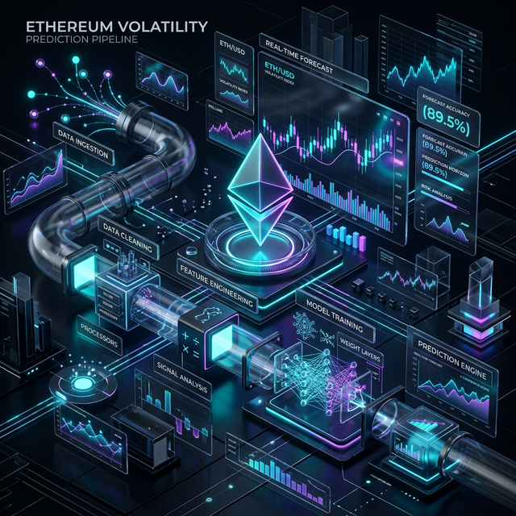
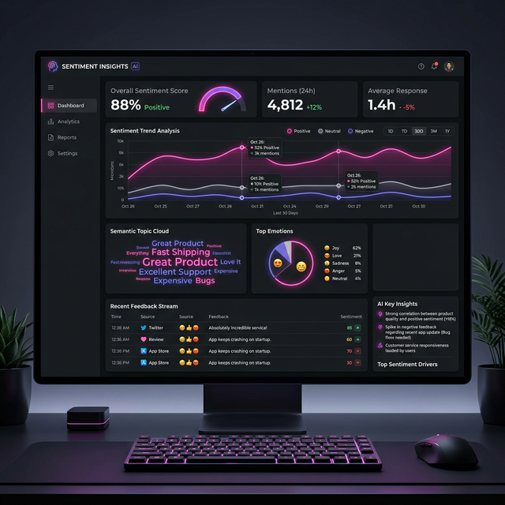

Hi, I'm
Jonathan Ebenezer
Computer Science & Mathematics
B.S. at University of Texas at Dallas | Quantitative Researcher & Full-Stack Engineer.
About Me
University of Texas at Dallas
Expected Graduation: May 2029
B.S. in Computer Science & B.S. in Mathematics (Statistics Specialization)
- GPA: 3.729 (Pursuing 2 degrees simultaneously)
- Computing Honors: Top 30 CS Students at UTD
- National Merit Scholar & Collegium V Honors Program
- Relevant Coursework: Multivariable Calculus, Linear Algebra, Theoretical Calculus
- Awards: 3x AP Scholar with Distinction, National Merit Scholarship Recipient
Technical Skills
Certifications: Deep Learning Specialization, Machine Learning Specialization
Work Experience
Quantitative Researcher
Jan 2026 - PresentACM Research at UTD
- Conducting a rigorous comparative analysis of time-series analysis architectures, isolating the impact of forget gates on long-term price forecasting to quantify the decay of gradient information in volatile crypto assets.
- Engineering a rigorous time-series cross-validation pipeline, explicitly eliminating look-ahead bias.
- Benchmarked vanilla RNN architectures against LSTMs and HM-RNNs, optimizing for RMSE and Directional Accuracy rather than simple correlation to capture non-linear market dependencies.
Student Research Assistant
Jan 2026 - PresentUTD Dept of Computer Science (Dr. Wei Yang)
- Architecting a performance benchmark for TileLang, a tile-centric compiler that optimizes memory layout (swizzling/coalescing) for NVIDIA GPUs, outperforming legacy tensor compilers.
- Conducting comparative analysis of Triton vs. TileLang execution schedules, specifically evaluating how automated layout inference affects kernel latency and memory bandwidth utilization on H100 architectures.
- Building an automated evaluation harness to verify bitwise correctness and execution speed of LLM-generated CUDA/Triton kernels compared to PyTorch eager mode.
Backend Engineer
Jan 2026 - PresentUTD EPICS @ Center for Children and Families
- Engineering a full-stack statistical analysis platform using Vue.js and Python, eliminating 100% of manual errors.
- Architecting a robust ETL pipeline using Nuxt.js and MySQL to ingest clinical data from the REDCap API.
- Automating the analysis of patient scores against multivariate normative distributions (MCDI).
Machine Learning Engineer Internship (ML/Backend)
Aug 2025 - Dec 2025Adilabs.ai
- Architected and trained a hybrid anomaly detection pipeline combining a Variational Autoencoder (VAE) and IsolationForest, generating percentile-ranked anomaly scores from 200,000+ datapoints.
Featured Projects

Ethereum Volatility Prediction Pipeline
A hybrid AI trading strategy combining GARCH(1,1) for baseline volatility estimation, Gaussian Mixture Models for regime detection, and an LSTM model for predictive risk management.
- Achieved 1.29 Sharpe Ratio and 84.95% total return on a 2-year backtest (3x market outperformance).
- Reduced Max Drawdown by 68%.
- Optimized via Bayesian Hyperparameter Search (Optuna).

Vibe Checker Dashboard (HackUTD 2025)
A full-stack AI sentiment analytics dashboard developed to analyze and visualize emotional response data.
- Engineered with React, TypeScript, Flask, and Tailwind CSS.
- Custom LLM-driven NLP pipelines using Python and Nemotron.
- Integrated Azure AI Search and vector databases for semantic trend analysis.
AI-Powered Note-Taking Web Application
A comprehensive platform for intelligent document management, leveraging modern web frameworks and LLMs to summarize and organize notes effectively.
- Built using Next.js 15, TypeScript, Tailwind CSS, and ShadCN.
- Scalable relational database using PostgreSQL via Supabase and Prisma ORM.
- Intelligent text summarization and semantic search via OpenAI API.
Get In Touch
I'm currently open to new opportunities in software engineering, quantitative research, and data science. Let's connect!